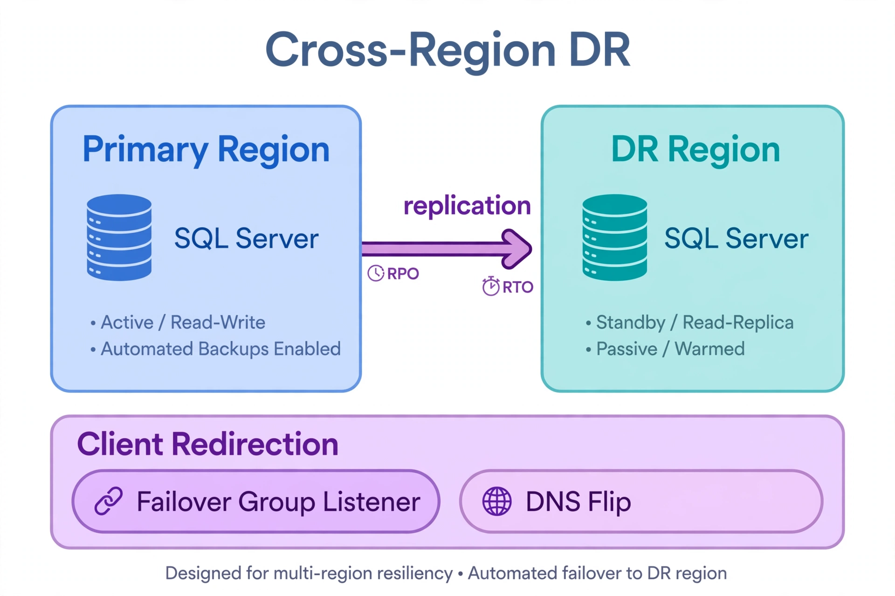

Chapter 16: SQL Server Cross-Region Disaster Recovery
High availability keeps you running when a server or zone fails. Disaster recovery keeps the business alive when a region fails — or when a logical catastrophe (mass deletion, ransomware, corruption replicated everywhere) makes every copy in the primary region untrustworthy. This chapter designs cross-region DR for SQL Server on each cloud: the replication mechanisms, the RPO/RTO trade-offs, the failover procedures, and the validation that proves it works. It builds on Chapter 9's testing discipline and applies it to the regional scale.
16.1 The DR Problem: What You Are Actually Solving
Define the scenarios before choosing mechanisms. Regional infrastructure failure (the cloud region is impaired): you need a runnable copy of the database in another region and a way to redirect clients. Logical disaster (data deleted or corrupted, then replicated): you need a point in time before the corruption, which replication cannot give you — only backups can. Prolonged degradation (the region works but badly): you need a controlled, preferably reversible failover. Most DR designs handle the first scenario well and the second poorly. Your design must cover both: replication for RTO, backups for RPO-behind-corruption.
Set the targets explicitly: RPO (how much data loss is acceptable — seconds, minutes, hours?) and RTO (how long until the business is running again?). Every mechanism below lands somewhere on that grid. Do not let anyone say "we need zero RPO and zero RTO" without pricing it — synchronous cross-region replication exists (and its latency cost is real), but most businesses choose async with eyes open.
16.2 AWS: Snapshot Copy, S3 Backups, and EC2 AGs
RDS for SQL Server has no cross-region read replica, so DR on AWS is assembled from backup-based mechanisms:
# Automate daily cross-region snapshot copy with EventBridge Scheduler
aws scheduler create-schedule \
--name dr-snapshot-copy-daily \
--schedule-expression "cron(0 2 * * ? *)" \
--target '{
"Arn": "arn:aws:lambda:us-east-1:123456789012:function:copy-rds-snapshot-dr",
"RoleArn": "arn:aws:iam::123456789012:role/scheduler-execution-role"
}' \
--flexible-time-window '{"Mode": "OFF"}' \
--region us-east-1
# The Lambda copies the latest automated snapshot to us-west-2
# and prunes copies older than the retention policy16.3 Azure: Failover Groups and Geo-Restore
Azure's DR story is the most integrated of the three clouds. Auto-failover groups (for SQL Database and Managed Instance) bundle databases or instances into a group with a primary region and a secondary region, a single listener endpoint, and automatic failover policy with a configurable grace period. The secondary is a continuously replicated, readable copy. RPO is seconds (async replication lag); RTO is the grace period plus promotion time — typically single-digit minutes. Readable secondaries in the DR region also serve reporting, so the DR investment does double duty.
# Create a failover group for a Managed Instance pair
az sql mi failover-group create \
--resource-group rg-prod \
--name fg-mi-prod \
--primary-server mi-prod-east \
--partner-servers mi-prod-west \
--partner-resource-group rg-prod-west \
--failover-policy Automatic \
--grace-period 60
# Planned failover drill (Chapter 9 discipline applies at regional scale)
az sql mi failover-group set-primary \
--resource-group rg-prod-west \
--name fg-mi-prod \
--server mi-prod-west \
--allow-data-loss falseFor the logical-disaster scenario, geo-restore recovers any database from geo-redundant backup storage to any region, at any point within the retention window — independent of replication. And long-term retention backups in paired-region storage give you the compliance-depth copies. The Azure DR checklist is therefore two tracks: failover groups for regional failure (tested with drills), geo-restore/LTR for logical disaster (tested with restore exercises).
16.4 The Client Redirection Problem

The top half is the data plane: the primary region's SQL Server replicates to the DR region, and the RPO/RTO badges on the replication arrow are the contract that mechanism buys you — know those two numbers cold before you promise anything to the business. The bottom lane is the part teams discover missing during the first real drill: client redirection. The failover group listener (Azure) abstracts the region behind one stable name; the DNS flip (AWS/Route 53) moves the hostname but is gated by TTL. Data replicated without a client-redirection plan is a DR plan that fails its first real test.
The database failing over regions is half the problem; getting clients to the new region is the other half. Options in increasing order of sophistication:
Whichever mechanism you choose, the DR drill must test it end to end: a database restored in the second region that no client can reach is not recovered. Include client connectivity in the drill's success criteria.
16.5 RPO/RTO Reality Check
| Mechanism | Typical RPO | Typical RTO | Notes |
|---|---|---|---|
| RDS cross-region snapshot copy | Hours | Restore time (30+ min) | Simplest; automate and verify copies |
| Native backup to S3 + CRR | Minutes (log backup frequency) | Restore + recovery time | Portable; best RPO without running secondary |
| Distributed AG (EC2) | Seconds | Minutes (manual/automated) | Most complete; most operational cost |
| Azure failover group (auto) | Seconds | Grace period + promotion | Integrated; readable secondary included |
| Azure geo-restore | Up to 1 hour | Restore time | Per-database; covers logical disaster |
Treat these as starting points for your own measurement, not guarantees. Inter-region latency, database size, and restore throughput all move the numbers. The only RPO/RTO that counts is the one from your last drill.
16.6 The DR Drill: Regional Game Day
Run the regional drill at least annually (Chapter 9, level 4). The script: declare the drill, fail over (or restore) in the secondary region, redirect clients via your chosen mechanism, run the business's critical transactions against the secondary, measure the actual RTO, then fail back. Record every manual step — each one is an automation candidate. Common drill findings: the secondary region's capacity was never reserved (failover succeeds technically but the undersized secondary falls over under load); KMS keys or Key Vault access do not exist in the secondary region (encrypted restores fail); the runbook's endpoint names are stale; and nobody told the security team, whose anomaly detection pages on the "unexpected" cross-region traffic.
16.7 Logical Disaster: The Scenario Replication Cannot Save
Replication faithfully copies corruption, deletion, and ransomware encryption to every replica — that is its job. Defense in depth for logical disaster:
Key Takeaways
Test yourself on this chapter
5 questions · instant scoring · explanations included
QueryOptimizer — Self-Hosted SQL Performance Workbench
Execution-plan visualizer · Index advisor · Slow query dashboard · Built for SQL Server